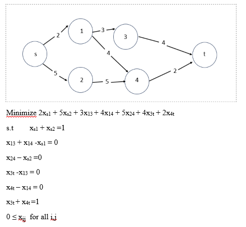
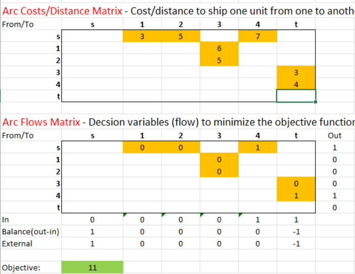
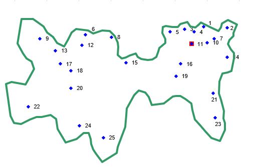
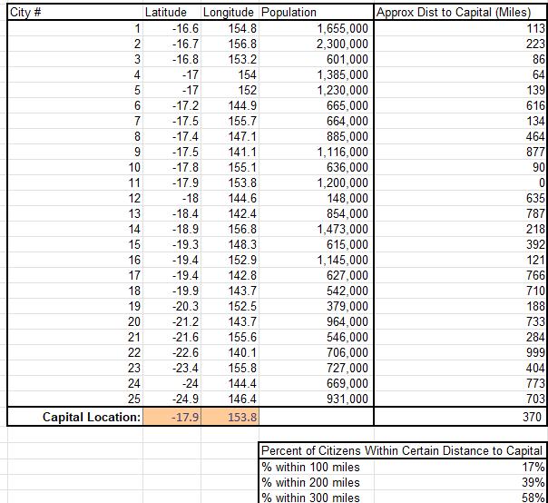

Routing Optimization: Shortest Path and Facility Location
Results at a glance
11minimum total cost on the shortest path network
370 miweighted average distance to the optimal capital location
17% / 39% / 58%of citizens within 100, 200 and 300 miles of that capital
Problem
Two classic network questions. What is the cheapest route from a source to a destination through a network of connected nodes? And where should a single supply center, in this case a capital, be placed so that it best serves a spread-out population?
Approach
Shortest path
- Wrote the problem as an algebraic formulation: minimize total arc cost subject to flow balance constraints at every node.
- Built an Excel matrix of arc costs and arc flows, with decision variables for each arc, and solved for the minimum cost path.
Demand weighted distance
- Used latitude, longitude and population data for 25 cities in a target region.
- Applied the Geographic Center and Center of Gravity (COG) methods to locate the optimal facility position.
- Calculated the weighted average distance and the share of citizens within 100, 200 and 300 miles of the location.
Tools
- Excel (matrix formulation of arc costs and flows)
- Center of Gravity and Geographic Center location methods
Result




What I learned
ADD: 2 to 3 sentences in your own voice.